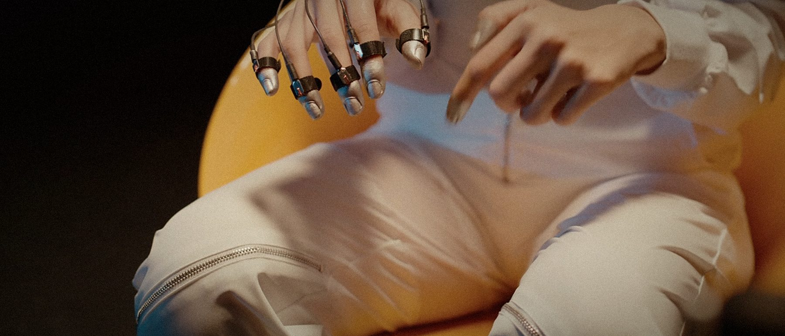
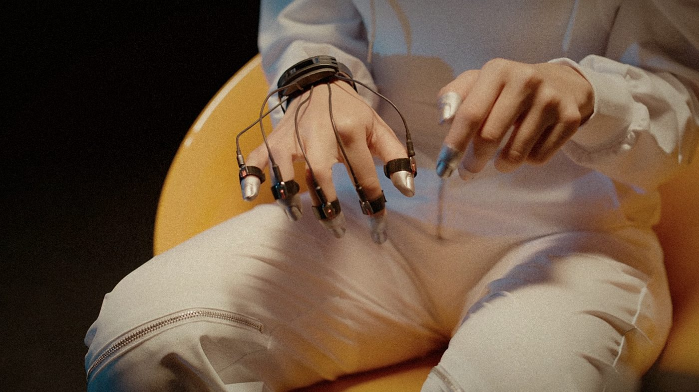
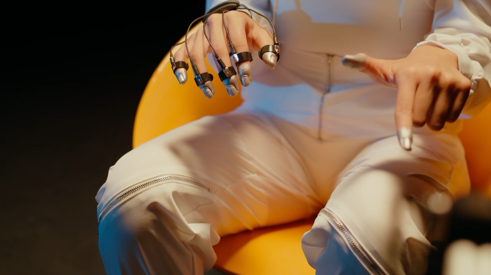
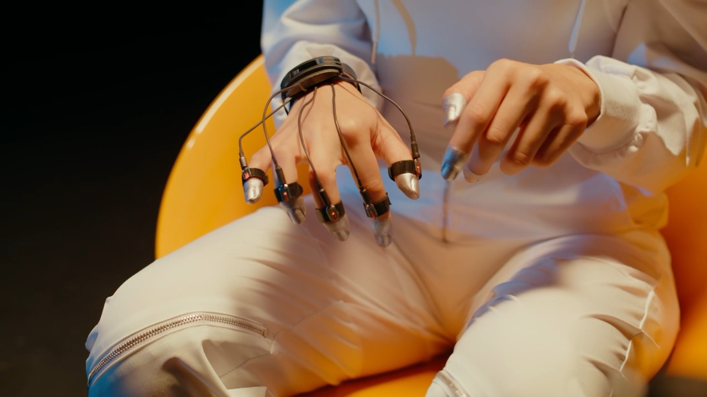
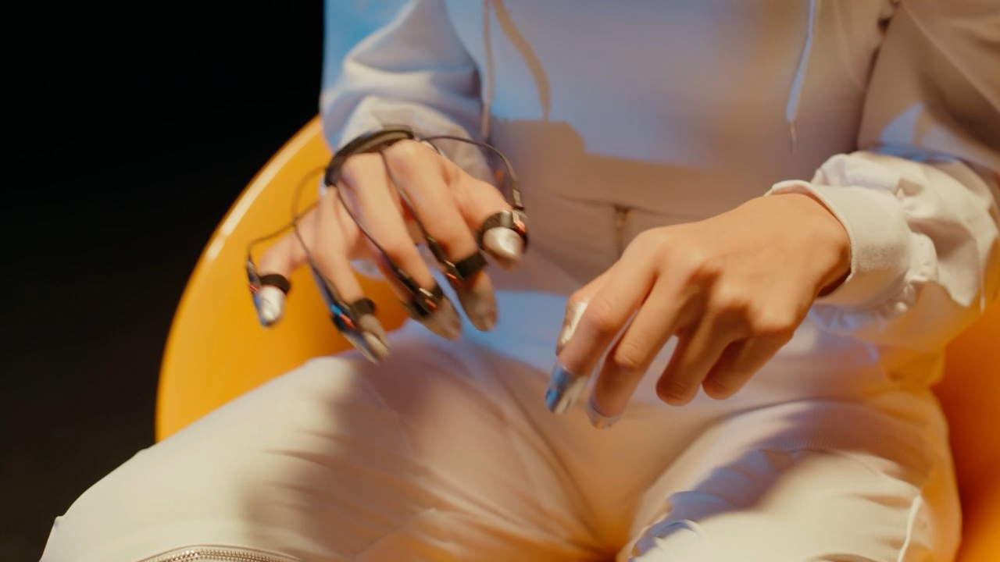
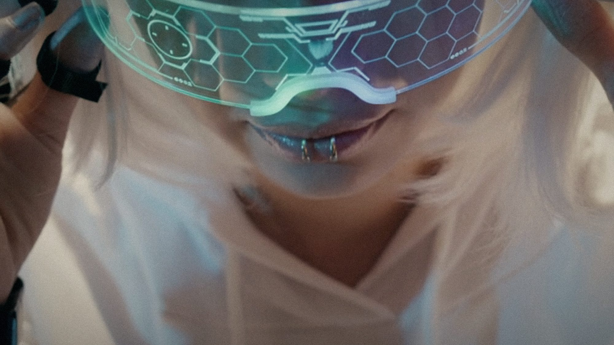

00:00 / 00:00
影像装置 / 2024 / 7 分钟 · 导演 Ye · 编剧 Ye · 摄影 陈默 · 剪辑 Ye · 声音 白噪工作室 · 主演 阿岚 · 1.66:1 / 立体声
项目档案只读
最后更新 2025.01.16Ye / 导演
触觉练习
我们把手放在棉布、金属和另一只手上，让摄影机只拍接触发生的那一秒。整部片子没有解释技术，只关心皮肤记住的东西。
“触碰是最后一种不能被上传的语言。”

制作工具
- 微距实拍
- 触觉传感器测试
- 手部动作编排
- 布料与金属采样
01 · 缘起
最初只是一次手部测试：传感器贴片、指环、几块不同质地的布。演员把手伸出去，又收回来。那个没有完成的动作，成了整部短片的起点。
我们想拍“差一点碰到”的时刻。它比真正的触碰更长，也更难演。
02 · 世界
近未来，触觉可以被记录和回放。人们购买别人的触感，像购买一段天气。主角的工作是测试这些触感，直到她摸到一件没有数据来源的东西。
那件东西没有名字，也没有配对文件。它只是一块温热的布。
03 · 视觉语言
全部使用微距与浅景深，手的局部占满画面。背景被压成琥珀色和黑色，让皮肤成为唯一的地形。
我们保留了指关节的停顿和指甲边缘的阴影。剪辑上，每一次触碰之间都留出一秒空白。
04 · 制作规格
实拍 4 天，使用 100 毫米微距与手持辅助。声音全部来自接触本身：布料摩擦、金属轻碰、呼吸和室内电流；后期 5 周。
资产画布




命名约定
角色ye_触觉_角色_手_v06
道具ye_触觉_道具_指环_v02
材质ye_触觉_材质_棉布_v01
镜头ye_触觉_镜头_0009_v03
色板
规格表
- 片长
- 7 分钟
- 画幅
- 1.66:1
- 声音
- 立体声
- 拍摄
- 4 天，2024 冬
- 版本
- 数字电影包 / 母版文件
最后，我们留了一秒没有触碰的画面。那是最响的一秒。
项目档案 · 触觉练习上海 · 2024
